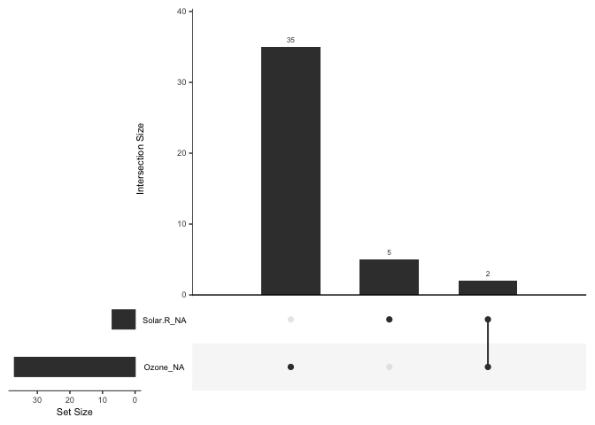

naniar provides principled, tidy ways to summarise, visualise, and manipulate missing data with minimal deviations from the workflows in ggplot2 and tidy data. It does this by providing:
- Shadow matrices, a tidy data structure for missing data:
- Shorthand summaries for missing data:
- Numerical summaries of missing data in variables and cases:
- Visualisation for missing data:
For more details on the workflow and theory underpinning naniar, read the vignette Getting started with naniar.
For a short primer on the data visualisation available in naniar, read the vignette Gallery of Missing Data Visualisations.
Installation
You can install naniar from CRAN:
install.packages("naniar")Or you can install the development version on github using remotes:
# install.packages("remotes")
remotes::install_github("njtierney/naniar")A short overview of naniar
Visualising missing data might sound a little strange - how do you visualise something that is not there? One approach to visualising missing data comes from ggobi and manet, which replaces NA values with values 10% lower than the minimum value in that variable. This visualisation is provided with the geom_miss_point() ggplot2 geom, which we illustrate by exploring the relationship between Ozone and Solar radiation from the airquality dataset.
library(ggplot2)
ggplot(data = airquality,
aes(x = Ozone,
y = Solar.R)) +
geom_point()
#> Warning: Removed 42 rows containing missing values (geom_point).
ggplot2 does not handle these missing values, and we get a warning message about the missing values.
We can instead use geom_miss_point() to display the missing data
library(naniar)
ggplot(data = airquality,
aes(x = Ozone,
y = Solar.R)) +
geom_miss_point()
geom_miss_point() has shifted the missing values to now be 10% below the minimum value. The missing values are a different colour so that missingness becomes pre-attentive. As it is a ggplot2 geom, it supports features like faceting and other ggplot features.
p1 <-
ggplot(data = airquality,
aes(x = Ozone,
y = Solar.R)) +
geom_miss_point() +
facet_wrap(~Month, ncol = 2) +
theme(legend.position = "bottom")
p1
Data Structures
naniar provides a data structure for working with missing data, the shadow matrix (Swayne and Buja, 1998). The shadow matrix is the same dimension as the data, and consists of binary indicators of missingness of data values, where missing is represented as “NA”, and not missing is represented as “!NA”, and variable names are kep the same, with the added suffix “_NA” to the variables.
head(airquality)
#> Ozone Solar.R Wind Temp Month Day
#> 1 41 190 7.4 67 5 1
#> 2 36 118 8.0 72 5 2
#> 3 12 149 12.6 74 5 3
#> 4 18 313 11.5 62 5 4
#> 5 NA NA 14.3 56 5 5
#> 6 28 NA 14.9 66 5 6
as_shadow(airquality)
#> # A tibble: 153 x 6
#> Ozone_NA Solar.R_NA Wind_NA Temp_NA Month_NA Day_NA
#> <fct> <fct> <fct> <fct> <fct> <fct>
#> 1 !NA !NA !NA !NA !NA !NA
#> 2 !NA !NA !NA !NA !NA !NA
#> 3 !NA !NA !NA !NA !NA !NA
#> 4 !NA !NA !NA !NA !NA !NA
#> 5 NA NA !NA !NA !NA !NA
#> 6 !NA NA !NA !NA !NA !NA
#> 7 !NA !NA !NA !NA !NA !NA
#> 8 !NA !NA !NA !NA !NA !NA
#> 9 !NA !NA !NA !NA !NA !NA
#> 10 NA !NA !NA !NA !NA !NA
#> # … with 143 more rowsBinding the shadow data to the data you help keep better track of the missing values. This format is called “nabular”, a portmanteau of NA and tabular. You can bind the shadow to the data using bind_shadow or nabular:
bind_shadow(airquality)
#> # A tibble: 153 x 12
#> Ozone Solar.R Wind Temp Month Day Ozone_NA Solar.R_NA Wind_NA Temp_NA
#> <int> <int> <dbl> <int> <int> <int> <fct> <fct> <fct> <fct>
#> 1 41 190 7.4 67 5 1 !NA !NA !NA !NA
#> 2 36 118 8 72 5 2 !NA !NA !NA !NA
#> 3 12 149 12.6 74 5 3 !NA !NA !NA !NA
#> 4 18 313 11.5 62 5 4 !NA !NA !NA !NA
#> 5 NA NA 14.3 56 5 5 NA NA !NA !NA
#> 6 28 NA 14.9 66 5 6 !NA NA !NA !NA
#> 7 23 299 8.6 65 5 7 !NA !NA !NA !NA
#> 8 19 99 13.8 59 5 8 !NA !NA !NA !NA
#> 9 8 19 20.1 61 5 9 !NA !NA !NA !NA
#> 10 NA 194 8.6 69 5 10 NA !NA !NA !NA
#> # … with 143 more rows, and 2 more variables: Month_NA <fct>, Day_NA <fct>
nabular(airquality)
#> # A tibble: 153 x 12
#> Ozone Solar.R Wind Temp Month Day Ozone_NA Solar.R_NA Wind_NA Temp_NA
#> <int> <int> <dbl> <int> <int> <int> <fct> <fct> <fct> <fct>
#> 1 41 190 7.4 67 5 1 !NA !NA !NA !NA
#> 2 36 118 8 72 5 2 !NA !NA !NA !NA
#> 3 12 149 12.6 74 5 3 !NA !NA !NA !NA
#> 4 18 313 11.5 62 5 4 !NA !NA !NA !NA
#> 5 NA NA 14.3 56 5 5 NA NA !NA !NA
#> 6 28 NA 14.9 66 5 6 !NA NA !NA !NA
#> 7 23 299 8.6 65 5 7 !NA !NA !NA !NA
#> 8 19 99 13.8 59 5 8 !NA !NA !NA !NA
#> 9 8 19 20.1 61 5 9 !NA !NA !NA !NA
#> 10 NA 194 8.6 69 5 10 NA !NA !NA !NA
#> # … with 143 more rows, and 2 more variables: Month_NA <fct>, Day_NA <fct>Using the nabular format helps you manage where missing values are in your dataset and make it easy to do visualisations where you split by missingness:
airquality %>%
bind_shadow() %>%
ggplot(aes(x = Temp,
fill = Ozone_NA)) +
geom_density(alpha = 0.5)
And even visualise imputations
airquality %>%
bind_shadow() %>%
simputation::impute_lm(Ozone ~ Temp + Solar.R) %>%
ggplot(aes(x = Solar.R,
y = Ozone,
colour = Ozone_NA)) +
geom_point()
#> Warning: Removed 7 rows containing missing values (geom_point).
Or perform an upset plot - to plot of the combinations of missingness across cases, using the gg_miss_upset function
gg_miss_upset(airquality)
naniar does this while following consistent principles that are easy to read, thanks to the tools of the tidyverse.
naniar also provides handy visualations for each variable:
gg_miss_var(airquality)
Or the number of missings in a given variable at a repeating span
gg_miss_span(pedestrian,
var = hourly_counts,
span_every = 1500)
You can read about all of the visualisations in naniar in the vignette Gallery of missing data visualisations using naniar.
naniar also provides handy helpers for calculating the number, proportion, and percentage of missing and complete observations:
n_miss(airquality)
#> [1] 44
n_complete(airquality)
#> [1] 874
prop_miss(airquality)
#> [1] 0.04793028
prop_complete(airquality)
#> [1] 0.9520697
pct_miss(airquality)
#> [1] 4.793028
pct_complete(airquality)
#> [1] 95.20697Numerical summaries for missing data
naniar provides numerical summaries of missing data, that follow a consistent rule that uses a syntax begining with miss_. Summaries focussing on variables or a single selected variable, start with miss_var_, and summaries for cases (the initial collected row order of the data), they start with miss_case_. All of these functions that return dataframes also work with dplyr’s group_by().
For example, we can look at the number and percent of missings in each case and variable with miss_var_summary(), and miss_case_summary(), which both return output ordered by the number of missing values.
miss_var_summary(airquality)
#> # A tibble: 6 x 3
#> variable n_miss pct_miss
#> <chr> <int> <dbl>
#> 1 Ozone 37 24.2
#> 2 Solar.R 7 4.58
#> 3 Wind 0 0
#> 4 Temp 0 0
#> 5 Month 0 0
#> 6 Day 0 0
miss_case_summary(airquality)
#> # A tibble: 153 x 3
#> case n_miss pct_miss
#> <int> <int> <dbl>
#> 1 5 2 33.3
#> 2 27 2 33.3
#> 3 6 1 16.7
#> 4 10 1 16.7
#> 5 11 1 16.7
#> 6 25 1 16.7
#> 7 26 1 16.7
#> 8 32 1 16.7
#> 9 33 1 16.7
#> 10 34 1 16.7
#> # … with 143 more rowsYou could also group_by() to work out the number of missings in each variable across the levels within it.
library(dplyr)
#>
#> Attaching package: 'dplyr'
#> The following objects are masked from 'package:stats':
#>
#> filter, lag
#> The following objects are masked from 'package:base':
#>
#> intersect, setdiff, setequal, union
airquality %>%
group_by(Month) %>%
miss_var_summary()
#> # A tibble: 25 x 4
#> # Groups: Month [5]
#> Month variable n_miss pct_miss
#> <int> <chr> <int> <dbl>
#> 1 5 Ozone 5 16.1
#> 2 5 Solar.R 4 12.9
#> 3 5 Wind 0 0
#> 4 5 Temp 0 0
#> 5 5 Day 0 0
#> 6 6 Ozone 21 70
#> 7 6 Solar.R 0 0
#> 8 6 Wind 0 0
#> 9 6 Temp 0 0
#> 10 6 Day 0 0
#> # … with 15 more rowsYou can read more about all of these functions in the vignette “Getting Started with naniar”.
Contributions
Please note that this project is released with a Contributor Code of Conduct. By participating in this project you agree to abide by its terms.
Future Work
- Extend the
geom_miss_*family to include categorical variables, Bivariate plots: scatterplots, density overlays - SQL translation for databases
- Big Data tools (sparklyr, sparklingwater)
- Work well with other imputation engines / processes
- Provide tools for assessing goodness of fit for classical approaches of MCAR, MAR, and MNAR (graphical inference from
nullaborpackage)
Acknowledgements
Firstly, thanks to Di Cook for giving the initial inspiration for the package and laying down the rich theory and literature that the work in naniar is built upon. Naming credit (once again!) goes to Miles McBain. Among various other things, Miles also worked out how to overload the missing data and make it work as a geom. Thanks also to Colin Fay for helping me understand tidy evaluation and for features such as replace_to_na, miss_*_cumsum, and more.
A note on the name
naniar was previously named ggmissing and initially provided a ggplot geom and some other visualisations. ggmissing was changed to naniar to reflect the fact that this package is going to be bigger in scope, and is not just related to ggplot2. Specifically, the package is designed to provide a suite of tools for generating visualisations of missing values and imputations, manipulate, and summarise missing data.
…But why naniar?
Well, I think it is useful to think of missing values in data being like this other dimension, perhaps like C.S. Lewis’s Narnia - a different world, hidden away. You go inside, and sometimes it seems like you’ve spent no time in there but time has passed very quickly, or the opposite. Also, NAniar = na in r, and if you so desire, naniar may sound like “noneoya” in an nz/aussie accent. Full credit to @MilesMcbain for the name, and @Hadley for the rearranged spelling.